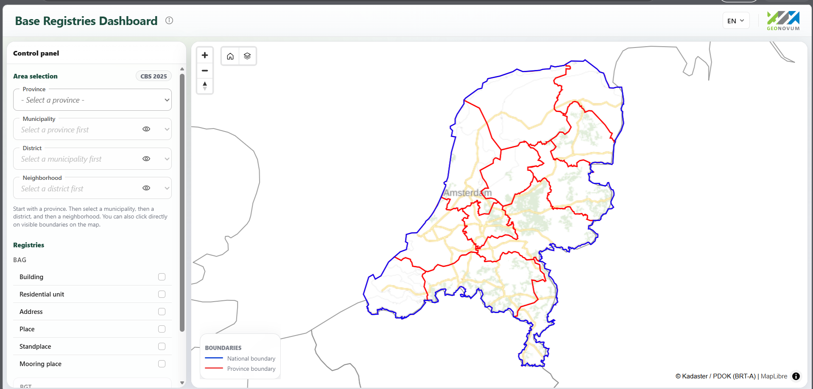
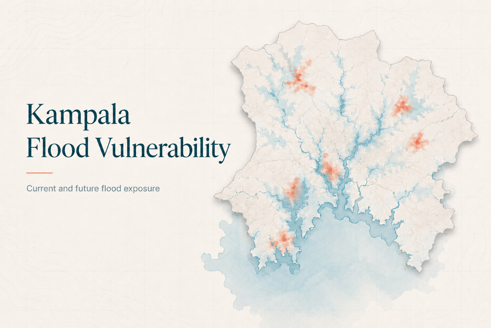
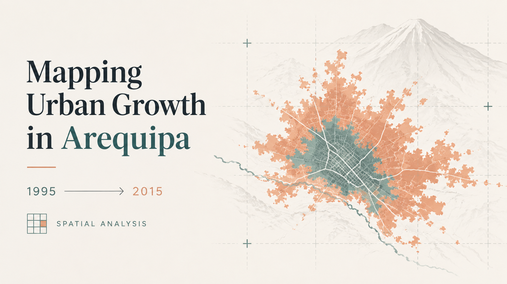
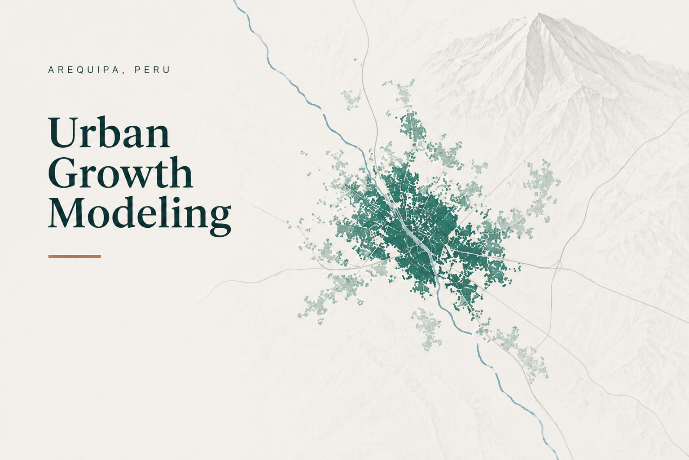

SUHI in German Cities
Research examining the drivers of daytime surface urban heat islands in Essen, Wuppertal, and Soest using Earth Observation, urban morphology, and environmental data.
Some of the projects and geospatial work I’ve been involved in.
Research examining the drivers of daytime surface urban heat islands in Essen, Wuppertal, and Soest using Earth Observation, urban morphology, and environmental data.

Interactive WebGIS dashboard developed at Geonovum to explore BAG and CBS data through PDOK OGC APIs, with drill-down analysis and bilingual report generation.
Interactive StoryMap exploring extreme heat in Japan through Earth Observation, climate, urban, and demographic data, with a focus on heat exposure, impacts, and planning responses.

A GIS-based flood risk assessment for Rubaga and Kawempe, integrating exposure, vulnerability, hazard, and future urban-growth scenarios to support risk-sensitive planning and mitigation.

A multi-temporal GIS analysis of Arequipa’s urban expansion from 1995–2015, using built-up change and landscape metrics to examine how the city became increasingly compact.

A spatial logistic regression and urban-growth simulation project examining how accessibility, terrain, existing development, and other spatial factors influenced the pattern of urban expansion in Arequipa.